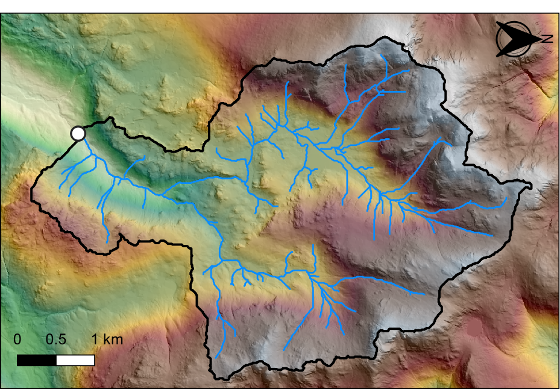

Hydrological analysis in R
25/08/2021
Part 1 Flow algorithms
It should be evident from the lectures that digital elevation models (DEMs) have a great deal of potential for modelling surface water hydrology and related phenomena in drainage basins. Much of this work is based on the assumptions that (1) we can trace the path that water will take from any point in an elevation grid to a basin outlet, and (2) the discharge of water from a particular location is directly related to its catchment area. This is a fairly reasonable assumption in most drainage basins. In this lab exercise, we will use a DEM of the Upper Eskdale watershed to model flow-related phenomena.

Upper Eskdale catchment
In this exercise you will gain experience in the following:
- DEM pre-processing;
- Calculating flow parameters: Pointers and contributing area;
- Comparing flow algorithms.